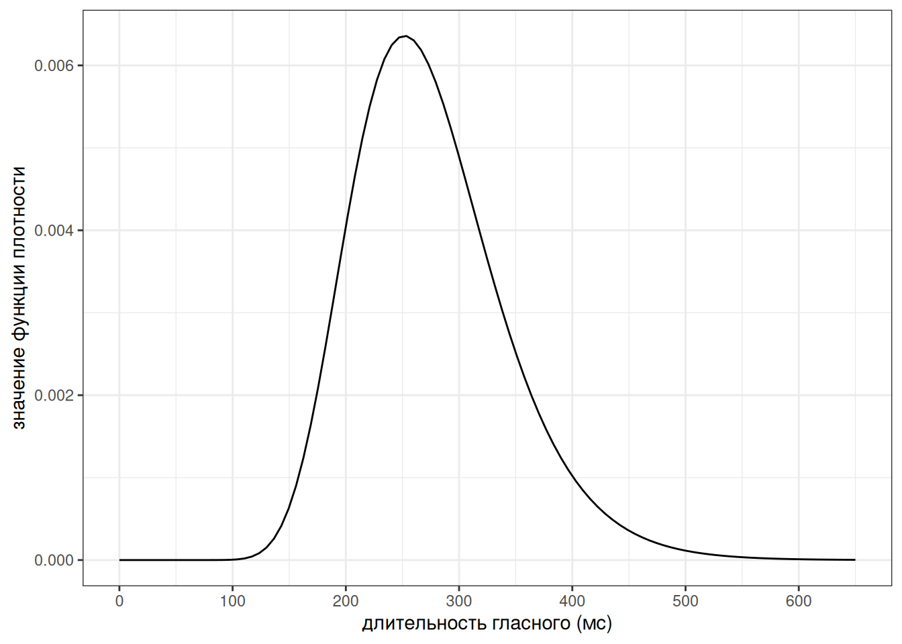
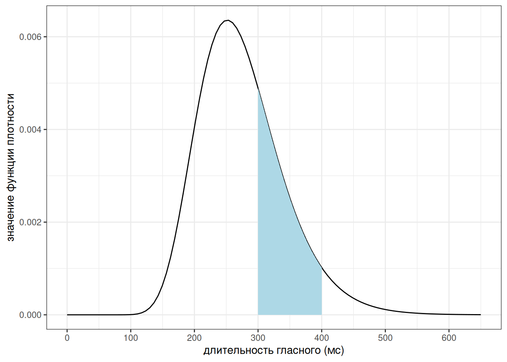
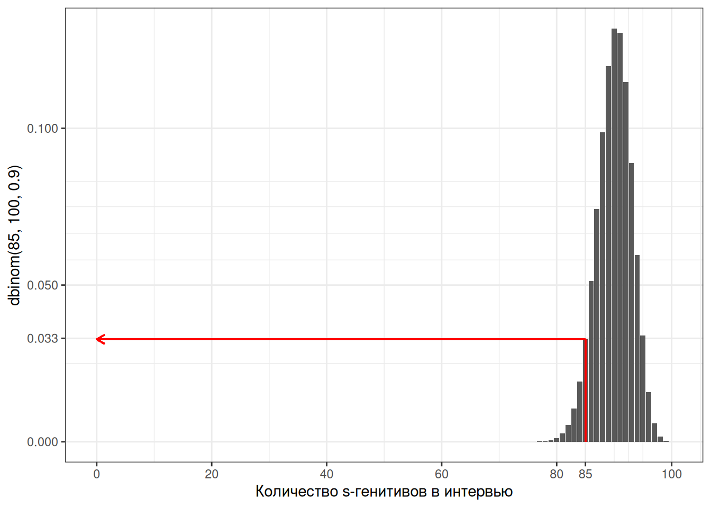
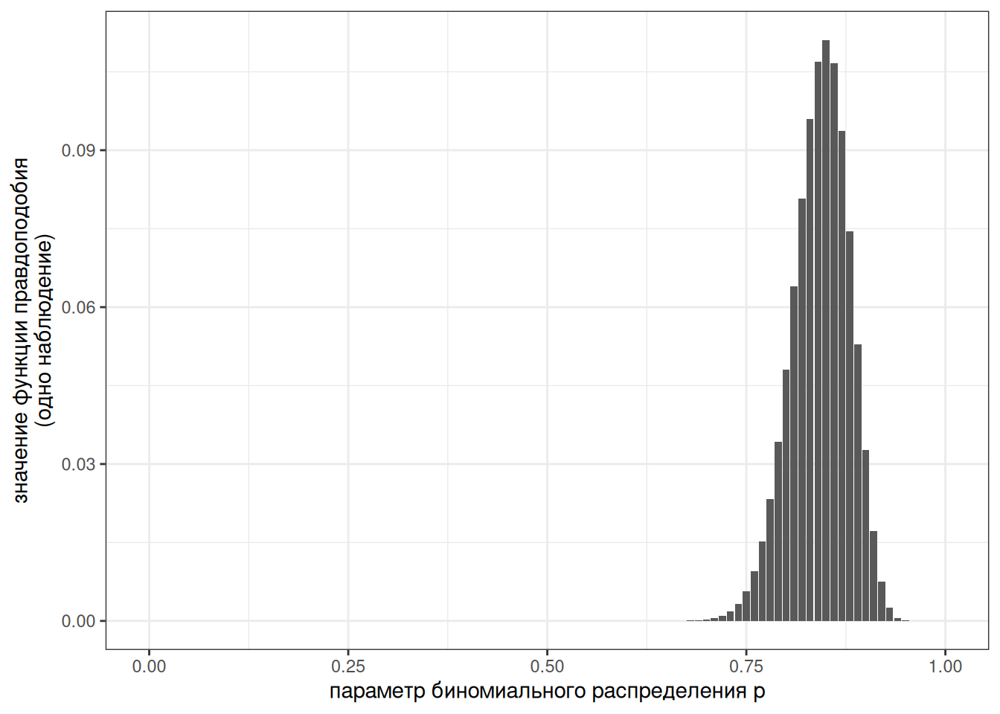
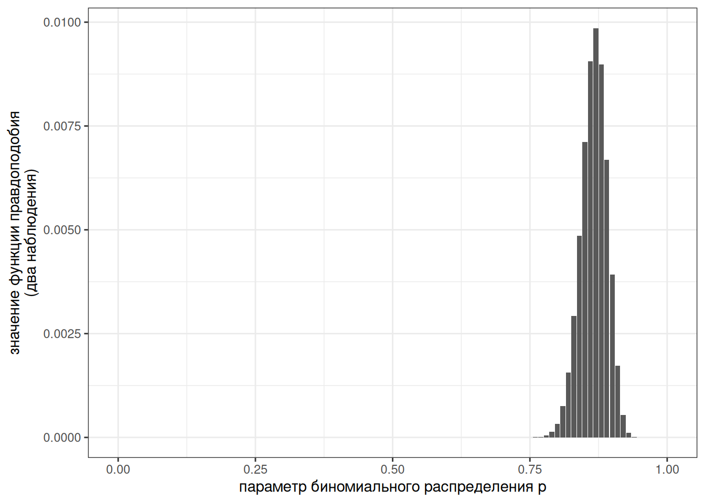
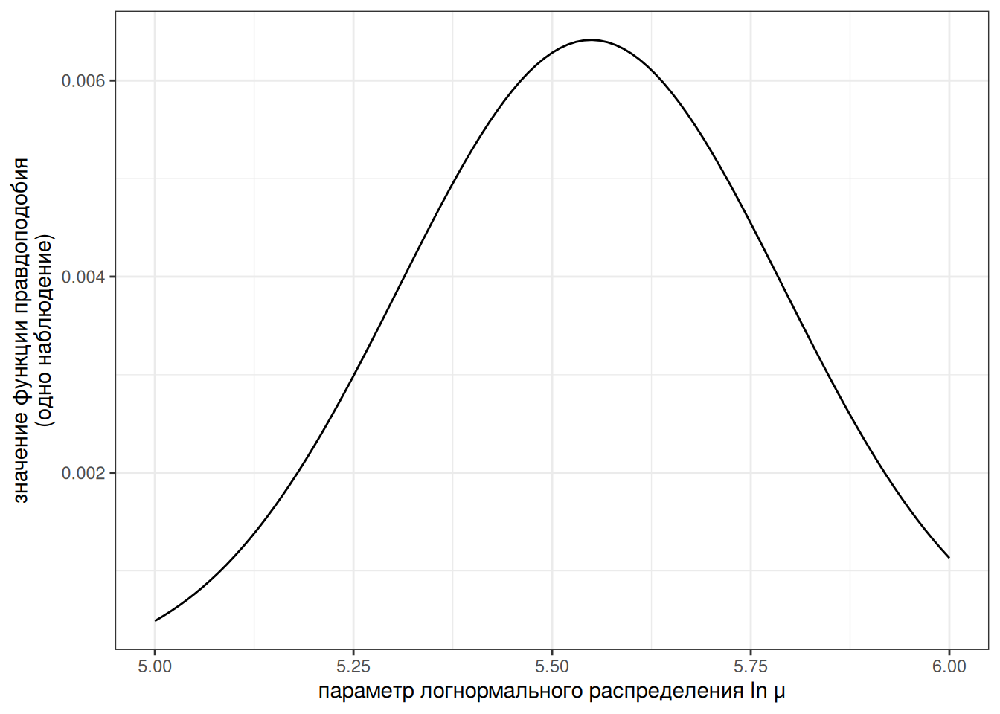
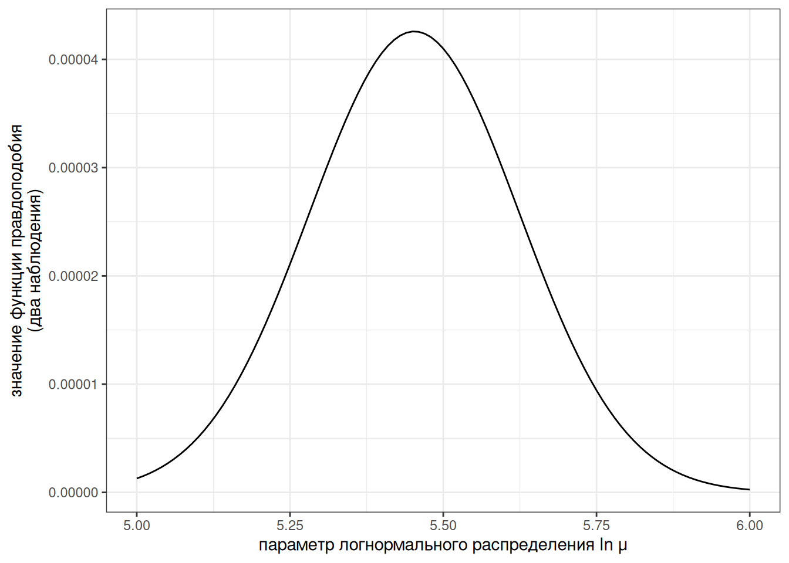
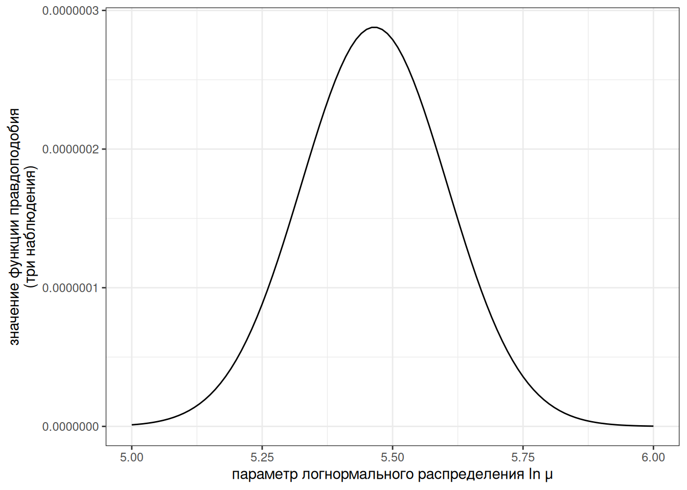
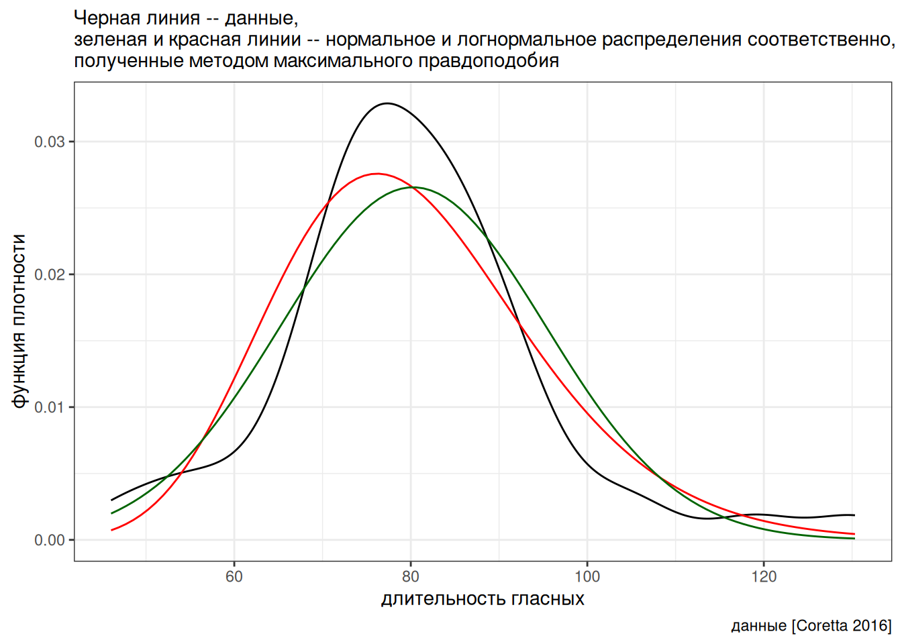
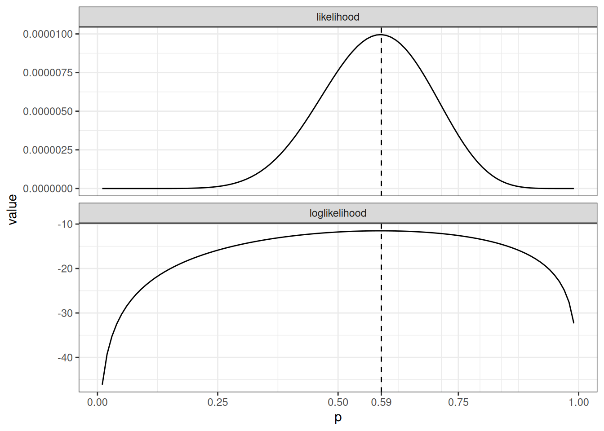

library(tidyverse)2 Метод максимального правдоподобия
2.1 Оценка вероятности
Когда у нас задано некоторое распределение, мы можем задавать к нему разные вопросы. Например, если мы верим что длительность гласных американского английского из (Hillenbrand et al. 1995) можно описать логнормальным распределением с параметрами \(\ln{\mu} =\) 5.587 и \(\ln{\sigma} =\) 0.242, то мы можем делать некотрые предсказания относительно интересующей нас переменной.
ggplot() +
stat_function(fun = dlnorm, args = list(mean = 5.587, sd = 0.242))+
scale_x_continuous(breaks = 0:6*100, limits = c(0, 650))+
labs(x = "длительность гласного (мс)",
y = "значение функции плотности")

2.2 Функция правдоподобия
Если при поиске вероятностей, мы предполагали, что данные нам неизвестны, а распределение и его параметры известны, то функция правдоподобия позволяет этот процесс перевернуть, запустив поиск параметров распределения, при изветсных данных и семье распределения:
\[L\left(X \sim Distr(...)|x\right) = ...\]
Таким образом получается, что на основании функции плотности мы можем сравнивать, какой параметр лучше подходит к нашим данным.
Для примера рассмотрим наш s-генетив: мы провели интервью и нам встретилось 85 s-генетивов из 100 случаев всех генетивов. Насколько хорошо подходит нам распределение с параметром p = 0.9?

Ответ:
dbinom(85, 100, 0.9)[1] 0.03268244Представим теперь это как функцию от параметра p:
tibble(p = seq(0, 1, by = 0.01)) |>
ggplot(aes(p)) +
stat_function(fun = function(p) dbinom(85, 100, p), geom = "col")+
labs(x = "параметр биномиального распределения p",
y = "значение функции правдоподобия\n(одно наблюдение)")
А что если мы располагаем двумя интервью одного актера? В первом на сто генитивов пришлось 85 s-генитивов, а во втором – 89. В таком случае, также как и с вероятностью наступления двух независимых событий, значения функции плотности перемножаются.
dbinom(85, 100, 0.9)*dbinom(89, 100, 0.9)[1] 0.003917892tibble(p = seq(0, 1, by = 0.01)) |>
ggplot(aes(p)) +
stat_function(fun = function(p) dbinom(85, 100, p)*dbinom(89, 100, p), geom = "col")+
labs(x = "параметр биномиального распределения p",
y = "значение функции правдоподобия\n(два наблюдения)")
В итоге:
- вероятность — P(data|distribution)
- правдоподобие — L(distribution|data)
Интеграл распределения/сумма значений вероятностей равен/на 1. Интеграл распределения/сумма значений правдоподобия может быть не равен/на 1.
2.3 Пример с непрерывным распределением
Мы уже обсуждали, что длительность гласных американского английского из (Hillenbrand et al. 1995) можно описать логнормальным распределением с параметрами \(\ln\mu\) и \(\ln\sigma\). Предположим, что \(\ln\sigma = 0.342\), построим функцию правдоподобия для \(\ln\mu\):
vowels <- read_csv("https://raw.githubusercontent.com/agricolamz/2024_HSE_b_da4l/main/data/phonTools_hillenbrand_1995.csv")
tibble(ln_mu = seq(5, 6, by = 0.001)) |>
ggplot(aes(ln_mu)) +
stat_function(fun = function(ln_mu) dlnorm(vowels$dur[1], meanlog = ln_mu, sdlog = 0.242))+
labs(x = "параметр логнормального распределения ln μ",
y = "значение функции правдоподобия\n(одно наблюдение)")
tibble(ln_mu = seq(5, 6, by = 0.001)) |>
ggplot(aes(ln_mu)) +
stat_function(fun = function(ln_mu) dlnorm(vowels$dur[1], meanlog = ln_mu, sdlog = 0.242)*dlnorm(vowels$dur[2], meanlog = ln_mu, sdlog = 0.242))+
labs(x = "параметр логнормального распределения ln μ",
y = "значение функции правдоподобия\n(два наблюдения)")
tibble(ln_mu = seq(5, 6, by = 0.001)) |>
ggplot(aes(ln_mu)) +
stat_function(fun = function(ln_mu) dlnorm(vowels$dur[1], meanlog = ln_mu, sdlog = 0.242)*dlnorm(vowels$dur[2], meanlog = ln_mu, sdlog = 0.242)*dlnorm(vowels$dur[3], meanlog = ln_mu, sdlog = 0.242))+
labs(x = "параметр логнормального распределения ln μ",
y = "значение функции правдоподобия\n(три наблюдения)")
Для простоты в начале я зафиксировал один из параметров логнормального распредления: лог стандартное отклонение. Конечно, это совсем необязательно делать: можно создать матрицу значений лог среднего и лог стандартного отклонения и получить для каждой ячейки матрицы значения функции правдоподобия.
2.4 Метод максимального правдоподобия (MLE)
Функция правдоподобия позволяет подбирать параметры распределения. Оценка параметров распределения при помощи функции максимального правдоподобия получила название метод максимального правдоподобия. Его я и использовал ранее для того, чтобы получить значения распределений для заданий из первого занятия:
- данные длительности американских гласных из (Hillenbrand et al. 1995) и логнормальное распределение
fitdistrplus::fitdist(vowels$dur, distr = 'lnorm', method = 'mle')Fitting of the distribution ' lnorm ' by maximum likelihood
Parameters:
estimate Std. Error
meanlog 5.5870359 0.005935135
sdlog 0.2423978 0.004196453- количество андийских слогов в словах и распределение Пуассона
andic_syllables <- read_csv("https://raw.githubusercontent.com/agricolamz/2024_HSE_b_da4l/main/data/andic_syllables.csv")
andic_syllables |>
filter(language == "Andi") |>
uncount(count) |>
pull(n_syllables) |>
fitdistrplus::fitdist(distr = 'pois', method = 'mle')Fitting of the distribution ' pois ' by maximum likelihood
Parameters:
estimate Std. Error
lambda 2.782715 0.02128182- Есть и другие методы оценки параметров.
- Метод максимального правдоподобия может быть чувствителен к размеру выборки.

2.5 Логорифм функции правдоподобия
Так как в большинстве случаев нужно найти лишь максимум функции правдоподобия, а не саму функцию \(\ell(x|\theta)\), то для облегчения подсчетов используют логорифмическую функцию правдоподобия \(\ln\ell(x|\theta)\): в результате, вместо произведения появляется сумма1:
\[\text{argmax}_\theta \prod \ell(\theta|x) = \text{argmax}_\theta \sum \ln\ell(\theta|x) \]
Во всех предыдущих примерах мы смотрели на 1–3 примера данных, давайте попробуем использовать функцию правдоподобия для большего набора данных.
set.seed(42)
v <- sample(0:2, 10, replace = TRUE)
sapply(seq(0.01, 0.99, 0.01), function(p){
...
}) ->
likelihood
sapply(seq(0.01, 0.99, 0.01), function(p){
...
}) ->
loglikelihood
tibble(p = seq(0.01, 0.99, 0.01),
loglikelihood,
likelihood) |>
pivot_longer(names_to = "type", values_to = "value", loglikelihood:likelihood) |>
ggplot(aes(p, value))+
geom_line()+
geom_vline(xintercept = 0.33, linetype = 2)+
facet_wrap(~type, scales = "free_y", nrow = 2)+
scale_x_continuous(breaks = c(0:5*0.25, 0.33))
2.6 Послесловие
- Не стоит путать метод максимального правдоподобия (MLE) c градиентным спуском
- Метод максимального правдоподобия — не единственный способ оценить параметр, смотрите, например, Maximum Spacing Estimation (Cheng and Amin 1983; Ranneby 1984; Anatolyev and Kosenok 2005), см.
msedist()из пакетаfitdistrplus.
Anatolyev, Stanislav, and Grigory Kosenok. 2005. “An Alternative to Maximum Likelihood Based on Spacings.” Econometric Theory 21 (2): 472–76.
Cheng, R. C. H., and N. A. K. Amin. 1983. “Estimating Parameters in Continuous Univariate Distributions with a Shifted Origin.” Journal of the Royal Statistical Society: Series B (Methodological) 45 (3): 394–403.
Coretta, Stefano. 2016. “Vowel Duration and Aspiration Effects in Icelandic.” University of York.
Hillenbrand, James, Laura A Getty, Michael J Clark, and Kimberlee Wheeler. 1995. “Acoustic Characteristics of American English Vowels.” The Journal of the Acoustical Society of America 97 (5): 3099–3111.
Ranneby, Bo. 1984. “The Maximum Spacing Method. An Estimation Method Related to the Maximum Likelihood Method.” Scandinavian Journal of Statistics, 93–112.
Rosenbach, Anette. 2003. “Aspects of Iconicity and Economy in the Choice Between the s-Genitive and the of-Genitive in English.” In Determinants of Grammatical Variation in English, edited by Günter Rohdenburg and Britta Mondorf. Berlin, New York: Mouton de Gruyter.
Это просто свойство логарифмов:
log(5*5) = log(5)+log(5)↩︎